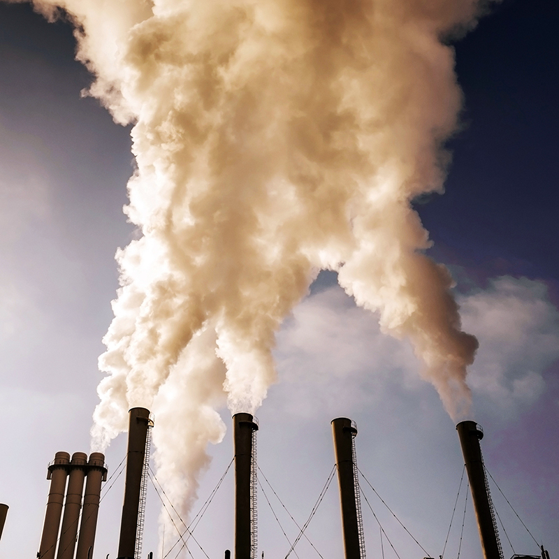

Cambio Climatico!🌪️🔥🪶
Por:Aleyska Rodriguez Ramos
Que es el cambio Climatico?
Se llama cambio climatico a la variacion global del clima de la Tierra. Esta variacion se debe a causas naturales y a la accion del hombre y se produce sobre todos los parametros climaticos: temperatura, precipitaciones, nubosidad, ect, a muy diversas escalas de tiempo.

En que nos afecta?
Que causa el cambio climatico??
- Los Gases!
- La Generacion de energia!
- Productos Manufacturados!
- Tala de Bosques!
Las emisiones de gases de efecto invernadero cubren la Tierra y retienen el calor del sol. Esto lleva al calentamiento global lo que lleva al Cambio Climatico.
La generacion de electricidad y calor mediante la quema de combustibles fosiles como el carbon, el petroleo y el gas natural provoca una gran parte de las emisiones mundiales. La mayor arte de la electricidad se sigue produciendo con combustibles fosiles; tan solo una cuarta parte proviene de la energia eolica, la solar y otras fuentes renovable, lo cual obiamente todo lleva al Cambio Climatico.

La industria y el sector manufactuero generan emisiones, sobre todo a partir de la quema de combustibles fosiles que permite producir la energia necesaria para la produccion de cemento, hierro, acero, electronica, plasticos, ropa y otros bienes. La mineria y otros procesos industriales tambien liberan gases.

La tala de bosques para crear granjas o pastos, o por otros motivos, provoca emisiones, ya que los arboles, al ser cortados, liberan el carbono que han estado almacenando. Como los bosques absorben dioxido de carbono, su destruccion tambien limita la capacidad de la nturaleza para mantener las emisiones fuera de la atmofera por lo tanto si los siguen talando iran ocasionando poco a poco el Cambio Climatico por que van aver menos flora y fauna.

Que problemas trae al mundo?
- Calentamiento Global🔥
- Sequia🪶
- Menos Fauna y Flora🪴🐘
- Aumento del nivel del mar🌊
- Tormentas🌪️
El Calentamiento Global es un fenomeno que afecta a todos los seres vivos de nuestro planeta y cuyas consecuencias pueden ser desastrosas. Consiste en el aumento de la temperatura del sistema climatico de la tierra a largo plazo.
La sequia es falta de lluvias durante un periodo de tiempo que produce sequedad en los campos y escasez de agua.
La Fauna son seres vivos por lo que son animales, ect... La Flora es un conjunto de especies vegetales que encontramos en un sitio concreto en un momento concreto.
El aumento del mar se debe al calentamiento global mayormente causado por el hombre osea la humanidad, se ocasiona por el derritimiento de capas de hielo y glaciares. El nivel del mar cuando suba puede ocacionar muchas muertes y muchas inundaciones.
Las tormenas son un fenomeno de la metereologidad producido por vientos fuertes que agitan violentamente al agua del mar. Esto puede ocacionar derumbes, Inundaciones ect...
Como podemos evitarlo?
Ahorrando energia🕯️
Al ahorrar energia ayuda a reducir los impactos ambientales.
No usar transporte que utilisen Gasolina o diesel.🚴♀️
Al no usarlos ayudamos a la capa de ozono y retrasamos el calentamiento global.No comer carnes🌿
Cuando no comes carnes ayudamos a que no hallan mas animales extintos.Hacer Reciclaje♻️
Al hacer reciclaje evitamos que hallan desechos en el mundo y haci podemos obtener menos contaminacion.